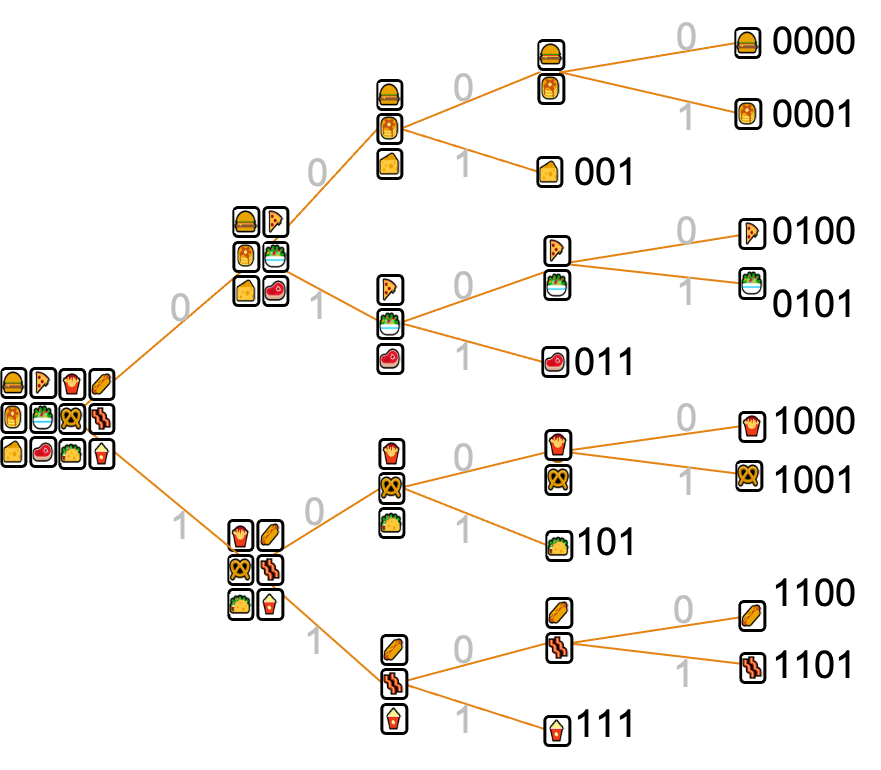
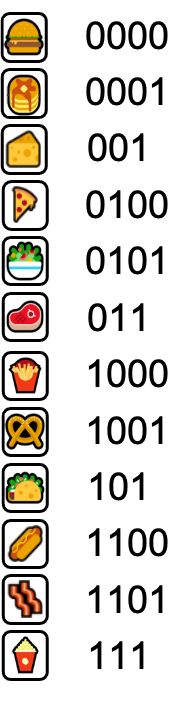

Data Compression
In the last section, we defined information mathematically based on a set of desirable properties. From an engineering standpoint, such a definition is useful if it allows us to do some relevant task better. In this section, we study data compression and show how it is related to entropy.
Data compression is possible because real signals do not have a uniform distribution: they have a lot of redundancy/predictability. This means that data compression can reduce the memory required to store or transmit the information with no or little loss. The departure from complete randomness comes in two forms:
- Nonuniform probabilities: Not all possibilities have the same probability (e.g., specific colors more common in a given image; some letters are more common in English)
- Dependence and patterns: Adjacent pixels likely to have identical/similar values; Q is often followed by U.
We will answer two important question about data compression:
- What is the best we can do?
- How can we do it?
The answer to the first question is one of the most elegant and useful results in information theory. As we will see, regardless of the computational resources available to us and the type of compression algorithm we use, for a given source of information, there is a strict mathematical limit for the compression ratio that we can achieve.
As the answer to the second question above, we’ll learn about Huffman codes (well-suited for nonuniform probabilities) and Lempel-Ziv compression (great for exploiting dependence and predictable patterns). Both are in widespread everyday use (e.g., .jpeg, .mp3, .zip formats rely on these).
Fixed- and variable-length codes
First, a bit of terminology:
- A code is a mapping between symbols (single pieces of information, e.g., colors of pixels, letters, …) and binary words (non-binary is also possible but uncommon). It can also be a mapping from binary sequences to binary sequences (e.g., in the case of Lempel-Ziv compression).
- The process of transforming symbols to binary sequences is called encoding, which is performed by an encoder.
- Each of the binary sequences used to represent a symbol is called a codeword.
In a fixed-length code, the same number of bits is used to represent each symbol. A variable-length code uses different numbers of bits for different symbols.
| Fixed-length code | Variable-length code | ||||||||||||||||||||||||
|
|
Fixed-Length Codes
Fixed-length codes have a simple decoding process since the boundaries of each codeword are immediately clear. But fixed-length codes can be very wasteful. You use the same number of bits to represent symbols that occur frequently and infrequently.
Despite being potentially wasteful, due to their simplicity, fixed-length codes are common:
- A number stored in a computer (e.g., 32-bit integer)
- Credit card magnetic stripe
- DNA and RNA: a sequence of 3 nucleic acids represent a codon for a specific amino acid when constructing a protein.
- American Standard Code for Information Interchange (ASCII)
- Originally a 7-bit code for alphanumeric symbols and some keyboard commands like
ENTERorESC. - 7 bits give $2^7$ = 128 possible symbols (seems like a lot).
- Extended ASCII allows 8 bits, but there are multiple such codes.
- Originally a 7-bit code for alphanumeric symbols and some keyboard commands like
- UTF-32 uses 32 bits to represent text (letters, emoji, non-printable characters), but it’s not in common use
- If there are $M$ different possible symbols, how many bits are needed for fixed-length encoding?
- ASCII uses a fixed number of bits to encode English characters. We could use the same approach to encode each English word. Assuming that English has half a million words, how many bits would we need for each word? Apart from being wasteful, why is encoding words instead of characters not a good idea?
Variable-length Code
Variable length coding is an essential step in efficiently encoding text, audio and images. Morse Code is the longest-lasting electrical signaling code in existence. MP3 uses a variable-length coding method called the Huffman code which we are going to discuss later.
The fundamental idea is to use short codewords for common (high probability) symbols and use longer codewords to represent less-probable symbols. Advantages: less storage space, faster transmission. Disadvantage: more difficult to decode (computation/circuit cost).
ASCII and Mores code are given for some characters in the table below. The alphabet of Mores code are ‘.’ (dot, short beep) and ‘-‘ (dash, long beep).
|
|
| Rank | Word | Rank | Word | |
|---|---|---|---|---|
| 1 | the | 901 | shot | |
| 2 | of | 902 | poet | |
| 3 | and | 903 | sever | |
| 4 | a | 904 | moving | |
| 5 | to | 905 | mass | |
| 6 | in | 906 | plane | |
| 7 | is | 907 | proper | |
| 8 | be | 908 | propose | |
| 9 | that | 909 | drink | |
| 10 | was | 910 | obviously |
Other examples of variable-length codes:
- English language (words have different lengths). The table shows the ranks of several words based on how common they are. You can see that common words are generally shorter.
- Compression programs like WinZip (Lempel-Ziv)
- UTF-8 encodes English characters, characters from other languages, emoji, etc. The length may be 1, 2, 3, or 4 bytes, which is determined by the first few bits, as shown below. It includes ASCII as a subset. If the first bit is 0, then the length is 8 bits and the other 7 bits are used as in ASCII.
- 1 Byte:
0xxxxxxx - 2 Bytes:
110xxxxx 10xxxxxx - 3 Bytes:
1110xxxx 10xxxxxx 10xxxxxx - 4 Bytes:
11110xxx 10xxxxxx 10xxxxxx 10xxxxxx
- 1 Byte:
Prefix codes – dealing with variable length
One difficulty with variable-length codes is determining when one codeword ends and another begins. There are two simple ways to solve this problem:
-
Using a separator symbol: space in English, comma in csv. This is generally wasteful and especially so in binary since we have to use either 0 or 1 as separator.
Design a binary variable-length code for representing capital English letters using method 1 above. If all letters are equally likely, what is the expected number of bits needed to encode one letter?
-
Prefix(-free) codes: A prefix code assigns a unique bit string to each possible symbol in the message such that no codeword is the prefix of another codeword.
Here is a code for digits 0-9 to binary strings:
$$0 \to 0000, 1 \to 0001, 2 \to 001, 3 \to 0100, 4 \to 0101, 5 \to 0110, 6 \to 0111, 7 \to 100, 8 \to 101, 9 \to 11$$Decode0010011100000100(from left to right).
Entropy and expected code length for iid sequences
What is the smallest number of bits/symbols for storing data produced by a source?
Let’s make this question more precise. First, we assume the data is produced by a source according to a distribution. As an example, consider a DNA sequence with symbols {A,C,G,T,N} where
and also consider the following code
| Genome symbol | Codeword |
|---|---|
| A | 00 |
| T | 01 |
| C | 100 |
| G | 101 |
| N | 111 |
The length of the binary sequence used for different symbols is different. But we can find the expected code length. For $x\in${A,C,G,T,N}, let $e(x)$ be the codeword representing $x$ and let $l(x)$ be the length of $e(x)$. Then the expected code length is
\[L = \sum_x l(x)P(X=x).\]If we encode an iid sequence of length $N$ using a code with expected length $L$, then the expected length of the binary representation of this sequence is $NL$. The true value will also be close to $NL$ based on the frequentist interpretation of probability. So approximately, we use $L$ bits per symbol. So we are after codes for which the expected code length is as small as possible.
- Consider the code: $$1\to 00,\quad 2\to 01,\quad 3\to 111, \quad 4\to 100, \quad 5\to 101, \quad 6\to 110$$ What is the expected length of this code?
- What is the expected length of encoding an iid sequence of 10 die rolls?
- Find the length of the encoding of the following sequence of die rolls: 5144225213. Compare with previous part.
- If we use a fixed-length code, how many bits would we need to represent a sequence of 10 die rolls?
For a source with a given distribution, what is the smallest possible code length?
A fundamental lower bound
Let us start with a lower bound that is always satisfied, regardless of how good our code is:
We will provide an informal proof of this statement:
- Let $X$ be the symbol to be encoded in binary and let $Y$ be its binary representation. For example, $X$ can be a symbol of a DNA sequence and $Y$ is a binary sequence obtained using the code: $X=A\to Y=00$, $X=T \to Y = 01$, $X= C \to Y = 100$, $X = G\to Y=101$, $X=N\to Y = 111$. Now, if we know $Y$, we also know $X$ and vice versa. So $H(X)=H(Y)$.
- On the other hand, $Y$ consists of $L$ bits on average, where $L$ is the expected code length. Each bit (binary digit) carries at most 1 bit of information. So $Y$ has, on average, at most $L$ bits of information. That is, $H(Y)\le L$.
- So $L\ge H(Y) = H(X)$, completing the proof.
This result is both deep and useful. It holds regardless of what method we use to find the code or what resources we use. The lower bound is mathematical and cannot be violated. In practice, if we get close to it, we know that we are achieving the theoretical limit, making a substantially better code impossible (so looking for it would be pointless).
A close upper bound
We now know that the expected code length cannot be smaller than the entropy. But how close to the entropy can we get? What is the expected length of the best code?
As an example, let us consider storing DNA data, where the symbols are {A, C, G, T}. The length of the fixed-length code is 2 bits/symbol. This is actually equal to the entropy when all symbols are equally likely, since the entropy is $\log_2 4 = 2$ bits per symbol. So for equally likely outcomes, our code matches the entropy of the signal and this is the best possible.
But what if some symbols are more probable. Then the entropy will be less than 2 bits/symbol and our fixed-length code is no longer necessarily optimal. For example, suppose
\[P(A)=1/2,\quad P(C)=1/4,\quad P(G)=1/8,\quad P(T)=1/8.\]Then, the entropy is $H=1.75$ bits,
which is less than 2. Can we encode this source so that we use 1.75 bits/symbol? Yes, we can use a variable-length code:
| Symbol (x) | A | C | G | T |
|---|---|---|---|---|
| Probability $P(x)$ | 1/2 | 1/4 | 1/8 | 1/8 |
| Self-information $I(x)$ | $\log_2 2=1$ | $\log_2 4=2$ | $\log_2 8=3$ | $\log_2 8=3$ |
| Codeword $e(x)$ | 0 | 10 | 110 | 111 |
| Codeword length $l(x)$ | 1 | 2 | 3 | 3 |
What is the expected code length?
The value is exactly equal to entropy. Not only that, equation \eqref{eq:entGen} for computing the entropy and equation \eqref{eq:entGen2} for computing the expected code length look almost identical. This is because we have managed to choose a codeword for each symbol with length equal to the self-information of that symbol. In other words, $I(x) = l(x)$ for all outcomes.
But of course, this is not possible if $I(x)$ is not always an integer. As an example, let us revisit our die roll example above:
| Symbol | 1 | 2 | 3 | 4 | 5 | 6 |
|---|---|---|---|---|---|---|
| Probability, $P(x)$ | 1/4 | 1/4 | 3/20 | 3/20 | 3/20 | 1/20 |
| Self-information, $I(x)$ | 2 | 2 | 2.74 | 2.74 | 2.74 | 4.32 |
| Codeword, $e(x)$ | ||||||
| Codeword length $l(x)$ |
What is the best way to fill in the rest of this table? We can’t have codewords with length $I(x)$ for all symbols $x$ but we can always find codewords whose length is $\lceil I(x)\rceil$, where $\lceil y\rceil$ is the smallest integer that is equal to or larger than $y$, e.g., $\lceil 2.7\rceil=3, \lceil 2\rceil=2$. So we can fill in the table as
| Symbol | 1 | 2 | 3 | 4 | 5 | 6 |
|---|---|---|---|---|---|---|
| Probability, $P(x)$ | 1/4 | 1/4 | 3/20 | 3/20 | 3/20 | 1/20 |
| Self-information, $I(x)$ | 2 | 2 | 2.74 | 2.74 | 2.74 | 4.32 |
| $\lceil I(x)\rceil$ | 2 | 2 | 3 | 3 | 3 | 5 |
| Codeword, $e(x)$ | 00 | 01 | 100 | 101 | 110 | 11100 |
| Codeword length $l(x)$ | 2 | 2 | 3 | 3 | 3 | 5 |
Note that $\lceil y\rceil < y+1$. Hence,
\[L = \sum_x P(x) l(x) = \sum_x P(x) \lceil I(x)\rceil < \sum_x P(x) (I(x)+1) = \sum_x P(x) I(x) + \sum_x P(x) = H + 1.\]Note that we didn’t provide a way to find a Shannon code since we will discuss a better method called the Huffman code later.
Putting the upper and lower bounds together, we arrive at Shannon’s source coding theorem:
Optimal codes
While Shannon codes can get close to entropy, they are not necessarily optimal. For example, in the table above, we could simply choose 111 to represent 5. Even after such obvious improvements are applied, this coding method still may not be optimal.
Binary search: toward optimal codes
Suppose you are participating in a 20-question game with the goal of identifying one of the following foods, which your friend has chosen at random:
What is your strategy?
The optimal strategy is binary search:
- Divide the set of possibilities into two equal parts. If this is not possible, make each part as close to half as possible.
- Choose one of the halves and ask whether it contains the item.
For the food items in the image above, this strategy can be implemented by dividing the possible items into the left half and the right half. Then after identifying the half that contains the chosen food, we can divide it again into the left half and the right half. At this point we will have arrived at a column that contains the selected food. We cannot divide three items into equal halves so we divide them into {top item, middle item} and {bottom item}. If it turns out to be in {top item, bottom item}, we will ask one more question to determine which one it is.
For example, if the item is 🍕 then your questions and your friend’s answers will be:
- Is it in the set {burger, pancakes, cheese, pizza, salad, beef}? yes
- Is it in the set {burger, pancakes, cheese}? no
- Is it in the set {pizza, salad}? yes
- Is it pizza? yes
An informal proof of the optimality of this method is as follows: Binary search works well because you get the maximum amount of information for every question. Since the two sets are as close to half the items as possible, the entropy of each answer is either 1 or as close to 1 as possible. So on average, you will ask the smallest number of questions.
20 questions and codes
We can represent our strategy for 20 question graphically, as shown below. Specifically, our first question is “Is the food in the left half?” If the answer is “yes”, we follow the branch labeled with 0, which gives us the new set of options. If “no,” we follow the branch labeled with 1. And continue in the same manner. The structure shown below is called a tree. A tree consists of nodes and edges. The edges connect the nodes. Each node in the tree above indicates a set of possible choices. The two edges going out of each node, divide the possible choices into two set.
|  |  |
We can then turn our 20 question game into a prefix code for the food items. The bits represent answers to the questions, “0” for “yes” and “1” for “no”. Since the questions are already predetermined, we don’t actually have to ask them and the bit sequence uniquely identifies the selected food. For example, pizza is 0100.
The expected number of questions is equal to the average length of the code and very close the entropy:
\[L = \frac4{12}\times 3 + \frac8{12}\times 4 = 3.66\ bits/symbol\] \[H = \log 12 = 3.58\ bits/symbol\]The above discussion shows a bijection between trees and prefix codes.
Unequal probabilities
Now let us consider a problem in which the probabilities are unequal: Suppose your friend has chosen a random point in the rectangle below and you want to find out its color with a minimum number of questions. The probability of each color is proportional to the area and is given in each rectangle.
The entropy of the color is $0.4\log (10/4)+.2\log(10/2)+.3\log(1/0.15) = 2.15$. One possibility is the following tree. The numbers in the parenthesis show the probability of the colors. R stands for Red, B for Blue, and so on.
RGBPY (1)
_______|_______________
| |
RG (.5) BPY (0.5)
__|____ ___|____
| | | |
R (.4) G (0.1) B (0.2) PY (0.3)
__|_________
| |
P (0.15) Y (0.15)
If we assign 0 to the left branch and 1 to the right branch, then the codeword for P is 110. The expected code length is 2.3 bits/symbol.
In the tree above we have seemingly divided the probability in half in each step to the extent possible. It turns out we still haven’t obtained the best possible code. This is because it is possible to divide the probability in a way that we’re closer to half. This optimal answer is given below, along with the probabilities and the codewords:
RGBPY (1)
______|___________
| |
R (.4) GBPY (.6)
0 _____|__________
| |
GY(.25) BP (.35)
___|___ __|______
| | | |
G (.1) Y (0.15) B (.2) P(.15)
100 101 110 111
Huffman codes
To find the optimal code, we must divide the probability into halves in each step. As we saw in the color example above, seemingly optimal answers may not be actually optimal. So is there a way to find the optimal code? Yes, the answer is Huffman codes, which are extensively used in various file formats for storage and communications. For a long time, many people searched for this optimal algorithm, including Shannon and Fano, who was Huffman’s professor (more about the story later). The problem was that everyone was trying to divide the probability mass into halves using a top-down approach. That is, they thought the first step should be to divide the whole set of outcomes into two sets with nearly equal probabilities. Huffman realized that solution is a bottom-up approach, first considering outcomes with smallest probabilities.
The following observations are critical to realizing a bottom-up approach is optimal.
In an optimal code:
- The two symbols with smallest probabilities will have the longest codewords assigned.
- The last bit for one of these two symbols is 0 and for the other 1.
- If we can distinguish between these two symbols, we can combine them into a new symbol.
A Huffman code is a prefix code with a binary tree structure, generated using the following algorithm:
- Initialize: each symbol gets its own node.
- Iterate until a tree is created:
- Choose pair of nodes with lowest probabilities.
- Create a new node and assign to it the sum of the two nodes’ probabilities.
- Connect the original nodes to the new node with two edges.
- Assign left branches 0 or 1 and right branches the other.
Let’s see an example. Suppose the following DNA symbols have the given probabilities:
| Genome symbol | Probability |
|---|---|
| A | 0.3 |
| C | 0.24 |
| G | 0.2 |
| T | 0.16 |
| N | 0.1 |
We start by setting up nodes for each outcomes, also writing their probabilities in parentheses.
A (0.3) C (0.24) G (0.2) T (0.16) N (0.1)
We then identify the two nodes with the smallest probabilities, which are N and T, and combine them:
A (0.3) C (0.24) G (0.2) T (0.16) N (0.1) |________________| NT (0.26)
We now have 4 nodes with probabilities 0.3, 0.24, 0.2, 0.26. The smallest pair are C, G, which we combine:
A (0.3) C (0.24) G (0.2) T (0.16) N (0.1) |________________| |________________| CG (0.44) NT (0.26)
We now have 3 nodes with probabilities 0.3, 0.44, 0.26. The smallest pair are those with probabilities 0.26 and 0.3. We rearrange the nodes to be able to combine them. If you are doing this with pen and paper, you don’t need to rearrange them.
C (0.24) G (0.2) A (0.3) T (0.16) N (0.1) |________________| | |________________| CG (0.44) |______________NT (0.26) ANT (0.56)
Finally, we combine the last two remaining nodes to obtain a tree:
C (0.24) G (0.2) A (0.3) T (0.16) N (0.1) |________________| | |________________| CG (0.44) |______________NT (0.26) | ANT (0.56) |________________________________| ACGTN (1)
We assign 0 to the left branches and 1 to the right branches,
C (0.24) G (0.2) A (0.3) T (0.16) N (0.1) | | | | | 0| |1 0| 0| |1 |________________| | |________________| CG (0.44) |___________1__NT (0.26) | ANT (0.56) 0| | |________________________________|1 ACGTN (1)
leading to the following code:
| Genome symbol | Probability | Codeword |
|---|---|---|
| A | 0.3 | 10 |
| C | 0.24 | 00 |
| G | 0.2 | 01 |
| T | 0.16 | 110 |
| N | 0.1 | 111 |
Let’s see another example. Consider loaded die with the following probabilities:
\[P(1)=1/4, \quad P(2)=1/4, \quad P(3)=1/4,\quad P(4)=1/8, \quad P(5)=1/16, \quad P(6)=1/16\]We start by setting up nodes for each outcome. We also write their probabilities. Then we proceed as in the Huffman algorithm.
1(1/4) 2(1/4) 3(1/4) 4(1/8) 5(1/16) 6(1/16) Initialization: nodes (p) | | | | |_________| | | | |__________56 (1/8) Combine 5 and 6 => 56 | | |_________456 (1/4) Combine 4 and 56 => 456 |_________| 3456 (1/2) Combine 3 and 456 => 3456 12(1/2) | Combine 1 and 2 => 12 |_____123456 (1)__| Combine 12 and 3456 => 12456
In this case, the entropy and the expected length of the Huffman code are both equal to 2.375 bits/symbol as the codeword lengths turn out to be equal to the self-informations.
| Symbol $x$ | Codeword $e(x)$ | $ P(x)$ | $I(x) $ | $l(x) $ |
|---|---|---|---|---|
| 1 | 00 | 1/4 | 2 | 2 |
| 2 | 01 | 1/4 | 2 | 2 |
| 3 | 10 | 1/4 | 2 | 2 |
| 4 | 110 | 1/8 | 3 | 3 |
| 5 | 1110 | 1/16 | 4 | 4 |
| 6 | 1111 | 1/16 | 4 | 4 |
Note: The average code length of Huffman codes won’t exactly match H, unless the probabilities are all powers of two. But, it will still be a lot closer for nonuniform data than fixed-length codes.
The story of Huffman codes:
❝In 1951 David A. Huffman and his classmates in an electrical engineering graduate course on information theory were given the choice of a term paper or a final exam. For the term paper, Huffman’s professor, Robert M. Fano, had assigned what at first appeared to be a simple problem. Students were asked to find the most efficient method of representing numbers, letters or other symbols using a binary code. […] Huffman worked on the problem for months, developing a number of approaches, but none that he could prove to be the most efficient. Finally, he despaired of ever reaching a solution and decided to start studying for the final. Just as he was throwing his notes in the garbage, the solution came to him. “It was the most singular moment of my life,” Huffman says. “There was the absolute lightning of sudden realization.”[…] Huffman says he might never have tried his hand at the problem — much less solved it at the age of 25 — if he had known that Fano, his professor, and Claude E. Shannon, the creator of information theory, had struggled with it. “It was my luck to be there at the right time and also not have my professor discourage me by telling me that other good people had struggled with this problem,” he says. ❞
Scientific American, Sept. 1991
Huffman codes for binary data
For the binary alphabet, if each bit is equally likely to be 0 or 1, then the entropy is 1 and the expected code length of any code will also be 1, so nothing can be done to reduce the size of the data.
Now, suppose we have an information sources that produces an iid binary sequence where $P(0)=0.1$ and $P(1)=0.9$. What is the entropy?
\[H = 0.1\log 10 + 0.9\log \frac1{0.9} = 0.469\ bits\ per\ symbol\]What is the Huffman code? Given that there are already only two symbols, the Huffman code is the same as the original symbols: $0\to 0, 1\to 1$. The expected length of the Huffman code is $L=1$. So the condition
\[H\le L < H+1\]is satisfied. Yet the Huffman code does not provide any advantage, even though the entropy is well below 1.
Block encoding to improve code length: The solution is to combine bits to create more than two symbols. This is called block encoding. Let’s group every pair of symbols and using the iid property find their probability:
\[P(00) = 0.01,\quad P(01)= P(10) = 0.09,\quad P(11) = 0.81.\]The Huffman code is given by
00 (0.01) 01 (0.09) 10 (0.09) 11(0.81)
|_________________| | |
00,01(0.1) | |
|_____________| |
00,01,10 (0.19) |
|________________________|
00,01,10,11 (1)
So the expected code length is
\[0.01\cdot 3 + 0.09\cdot 3 + 0.09\cdot 2 + 0.81\cdot 1 = 1.29\ bits\]But this is the expected length for representing two symbols. The expected number of bits used to encode each input bit is 1.29/2 = 0.645, which is less than 1 and only 0.176 bits away from entropy.
If we group $n$ symbols, then the Huffman code will be at most $1/n$ bits away from entropy. Why?
Compression ratio
When the input sequence and the encoded sequence are both binary, we define the compression ratio (CR) as
\[\text{CR}=\frac{\text{Length of original sequence}}{\text{Length of encoded sequence}}, \qquad (\text{binary input})\]For the preceding exercise, the compression ratio (CR) is
\[\text{CR} = \frac{20}{14}=1.43.\]If the input sequence is non-binary, but rather the symbols are from an alphabet with $M$ symbols, then the compression ratio is defined in reference to the shortest fixed-length binary code:
\[\text{CR}=\frac{\text{Length of original sequence}\times \lceil\log_2 M\rceil}{\text{Length of encoded sequence}}, \qquad (\text{non-binary input with $M$ symbols}).\]For example, if the sequence \(AACGTAN\) is encoded into binary as \(0,0,100,101,110,0,111\) (commas added for clarity), then the compression ratio is \(7\times 3/15=1.4\).
Clearly, the higher the compression ratio the better.
If we are not dealing with a file and are instead discussing a probabilistic source of information and a code without actually using it for compression, we can define the compression ratio for the code as
\[\text{CR of a Code}=\frac{1}{\text{Expected Code Length Per Symbol}}\ .\]For example, for the code of the previous exercise, the compression ratio is
\[\text{CR} = \frac{1}{0.645}=1.55,\]which is reasonably close to the empirical CR of 1.43.
Similarly, if the input is non-binary with $M$ distinct symbols,
\[\text{CR of a Code}=\frac{\lceil\log_2 M\rceil}{\text{Expected Code Length Per Symbol}}, \qquad (\text{non-binary input with $M$ symbols}).\]The codebook
When encoding data using Huffman codes or any other code, we need to also store the code, so that we can later use it for decoding. This information is referred to as the codebook or the dictionary. In practical problems, the number of bits used for the dictionary is typically much smaller than the length of the sequence, so we usually ignore it when computing the size of the compressed sequence.
Other coding methods
For a given block size (the number of symbols grouped together), the Huffman code is optimal. But to achieve a good code length, we may have to use large blocks. The issue is that the number of possible blocks quickly grows with the size of the block. For example, for binary, there are 4 possible blocks of length 2 bits, 8 blocks of length 3 bits, and so on. This leads to complex encoding and decoding tasks. In such situations, there are simpler alternatives:
- Shannon-Fano coding – a simple prefix code generator
- Guaranteed to generate a prefix code that is reasonably good, but not necessarily optimal
- It relies on the cumulative distribution function.
- Arithmetic coding – prefix code generated on the fly from input data
- Generates codes for sequences of symbols.
- Asymptotically achieves entropy limit, even if relative frequencies in data are not exactly powers of two.
Compression of Markov sequences and other non-iid data
Shannon’s result also holds for non-iid data, including Markov chains. In this case, it says if the length of data is long, the best expected code length that can be achieved is essentially equal to the entropy per symbol of the random sequence. We will discuss two approaches for achieving this, using Huffman codes on blocks of symbols and the Lempel-Ziv algorithm.
Huffman codes, again
Huffman codes can also be used when there is dependence between the sequence’s symbols, such as an image, where adjacent pixels are likely to be similar. But in this case, we have to create blocks larger than one symbol to be able to take advantage of the dependence between symbols. Let us see two examples:
A Markov chain
Let us consider the Markov chain with transition matrix:
| 🌞 | ☁️ | 🌧️ | |
|---|---|---|---|
| 🌞 | .7 | .2 | .1 |
| ☁️ | .1 | .7 | .2 |
| 🌧️ | .2 | .1 | .7 |
The following sequence of length around 300 is generated by this Markov chain:
🌞🌞🌞🌞☁️☁️☁️☁️☁️☁️☁️☁️☁️🌞🌞🌞🌞🌞☁️🌧️🌧️🌧️🌧️🌧️🌞🌞🌞☁️🌧️🌧️🌞🌞🌞🌞🌞🌧️☁️🌞☁️🌧️🌧️🌧️🌞☁️🌧️☁️☁️☁️☁️☁️☁️☁️☁️☁️☁️☁️☁️🌧️🌞🌞🌞🌞🌞🌞🌞🌞🌞🌞☁️🌧️🌧️🌧️🌧️🌧️🌞🌞🌞🌞🌞🌞🌧️🌧️🌧️🌧️🌧️🌞🌞🌞🌞🌞🌧️🌧️🌧️🌧️🌞🌞🌞🌞🌞🌞🌞🌞🌞🌞🌞🌞🌞🌧️🌞🌞🌞🌞🌞🌞🌞🌧️☁️☁️☁️☁️☁️🌧️☁️☁️🌧️🌧️🌧️🌧️🌧️🌧️☁️🌞🌧️🌧️🌧️🌧️🌧️🌧️🌧️🌧️🌞🌞🌞🌞🌞☁️☁️☁️☁️☁️🌞☁️🌞☁️☁️☁️☁️☁️🌧️🌧️🌞🌞🌞☁️🌞☁️☁️☁️☁️🌧️🌞🌞🌞🌞🌞🌧️🌧️☁️🌧️🌧️🌧️🌧️🌧️🌧️🌞🌞🌞🌧️🌧️🌞🌞☁️🌞🌞🌧️🌧️☁️☁️☁️🌧️🌧️🌧️🌞☁️☁️☁️☁️🌧️🌧️🌞🌞🌞🌞🌞🌞🌞🌞🌞🌞🌞🌧️🌧️🌧️🌧️🌧️🌧️🌧️🌧️🌞🌞☁️🌧️🌧️☁️☁️☁️☁️☁️🌧️🌞☁️☁️☁️☁️☁️☁️☁️☁️☁️☁️☁️🌞🌧️☁️☁️☁️☁️☁️🌧️🌧️🌞☁️☁️🌞🌞☁️🌞☁️🌧️🌧️🌧️🌧️🌧️🌧️🌧️🌧️🌧️☁️☁️☁️☁️☁️☁️☁️☁️🌧️🌧️🌧️🌞🌞🌞☁️🌞🌞🌞☁️🌧️🌧️🌞🌞🌞🌞🌞🌞🌞🌞☁️☁️☁️☁️🌧️🌞🌞🌞🌧️☁️🌞☁️☁️☁️🌧️🌧️🌧️🌞☁️☁️🌧️🌧️🌧️☁️☁️🌞🌧️🌧️🌞🌞🌞🌞🌞🌞🌞🌞🌞🌞🌞🌞🌧️🌧️🌧️🌧️🌞🌞🌞🌞🌞☁️☁️☁️☁️☁️☁️☁️🌧️🌧️🌧️
How should we represent this data? The three weather types appear the same number of times. So we cannot assign a short codeword to the most common. We shouldn’t focus on individual symbols but rather on patterns as Markov chains are designed to represent relationships and patterns. More specifically, we should assign short codewords to common patterns. For the above example, we can form blocks by grouping each pair of symbols. Then we can assign short codewords to 🌞🌞, ☁️☁️, and 🌧️🌧️, and longer codewords to the other possibilities.
As a simpler example, consider the transition matrix,
\[A= \left(\begin{array} 0.9&.1\\.1&.9\end{array}\right).\]State 1 may for example correspond to cloudy weather and state 2 to sunny weather (it does not rain, ever). To keep our alphabet binary, we use 0 instead of 2. The following sequence of length 50 is generated by this Markov chain:
\[00000000001000000000000111110000000011111111111111\]We compress it using Huffman coding. We use the data itself to estimate the probabilities rather than the transition matrix of the Markov chain. We group the symbols into blocks of size 2:
\[00, 00, 00, 00, 00, 10, 00, 00, 00, 00, 00, 01, 11, 11, 00, 00, 00, 00, 11, 11, 11, 11, 11, 11, 11\]Then
\[P(00)=\frac{14}{25},\quad P(11)=\frac{9}{25}, \quad P(01)=\frac1{25},\quad P(10) = \frac1{25},\]leading to the Huffman code
\[00\to 0, \quad 11\to 10,\quad 01\to 110,\quad 10\to 111.\]Then the sequence can be encoded as
\[0 0 0 0 0 111 0 0 0 0 0 110 10 10 0 0 0 0 10 10 10 10 10 10 10\]which has length 38, or 0.76 bits per symbol and a compression ratio of $50/38=1.32$. The entropy of the Markov chain is 0.469 per symbol. If we had a longer chain and used larger blocks, Huffman code would be able to get closer to the entropy.
An image
Consider the eye image we saw before:
We can group $2\times 2$ blocks of pixels as blocks for Huffman code. There will be many completely black blocks and some completely white blocks. There will be a few blocks with mixed colors too. The Huffman code will assign short codewords to black and to white blocks and long codewords to mixed blocks, leading to a smaller number of bits than the 744 original bits.
Lempel-Ziv, the universal compression method
Suppose we are given a text file to compress. What should we take as symbols? Letters? Words? Sentences?
- If each letter was independent of others, we could take letters as symbols, but text has a lot of structure, repeated patterns, …
- Taking words or sentences as symbols makes probability estimation and encoding much more complex
Lempel-Ziv (LZ) compression does not use or track probabilities. It also operates “on the fly”, reading the data one symbol at a time. In fact, Lempel-Ziv is a universal compression method as it does not need to know the probabilities beforehand and so can be applied to any type of data. It is used in all-purpose compression tools such as gzip.
LZ vs HC:
- If the file is sufficiently large, LZ is nearly optimal
- If the symbols are independent, Huffman is optimal, for any data size
- LZ is a universal compression method and does not need to know the probabilities in advance.
The Lempel-Ziv algorithm
LZ works by identifying sequences of symbols that have appeared before and instead of repeating them, it points to their previous occurrence. The algorithm is given below in detail, but it’s optional.
- The sequence is divided into “phrases”, i.e., the shortest sequences that have not appeared before.
- For example, if the sequences is
aaabababaaabba..., we divide it asa,aa,b,ab,aba,aab,ba,....
- The first symbol is
a, which obviously has not been seen before, so this become a phrase. - The second symbol is
a, but this is already a phrase, so we read the next symbol. This gives usaa, which has not been seen before, soaabecomes the second phrase. - The next phrase is
b, asbhas not appeared before. And so on.
- For example, if the sequences is
- Assign a number to each phrase, from 1 to $C$, in order, where $C$ is the number of phrases.
-
a$\to$ 1,aa$\to$ 2,b$\to$ 3,ab$\to$ 4,aba$\to$ 5,aab$\to$ 6,ba$\to$ 7
-
- If we discard the last element of each phrase, it has occurred before. So we can represent each phrase as
(n,s)wherenis the index of the aforementioned previous occurrence andsis the last symbol.nis referred to as a pointer. We do this for all the phrases.- For example, for the phrase
aab,aahas occurred before as phrase 2. So we can representaabas the pair(2,b). - We represent phrases that contain a single symbol
sas(0,s). - The whole sequence can then be represented as
(0,a),(1,a),(0,b),(1,b),(4,a),(2,b),(3,a).
- For example, for the phrase
- Choose a binary sequences for each possible symbol
s.- For example, we may choose
a$\to$ 0 andb$\to$ 1.
- For example, we may choose
- Represent each pair
(n,s)by representingnas a binary number and representingsas its binary encoding.- Since the largest pointer is 4, we need 3 bits to represent the pointers.
- Our sequence then becomes
(000,0),(001,0),(000,1),(001,1),(100,0),(010,1),(011,0).
- We can remove the parentheses and commas since the length of each part is fixed.
- Our encoded sequence becomes:
0000001000010011100001010110.
- Our encoded sequence becomes:
In our toy example, the sequence actually became longer. This is because the example is too small. As mentioned before, Lempel-Ziv is optimal when the size of the data is large.